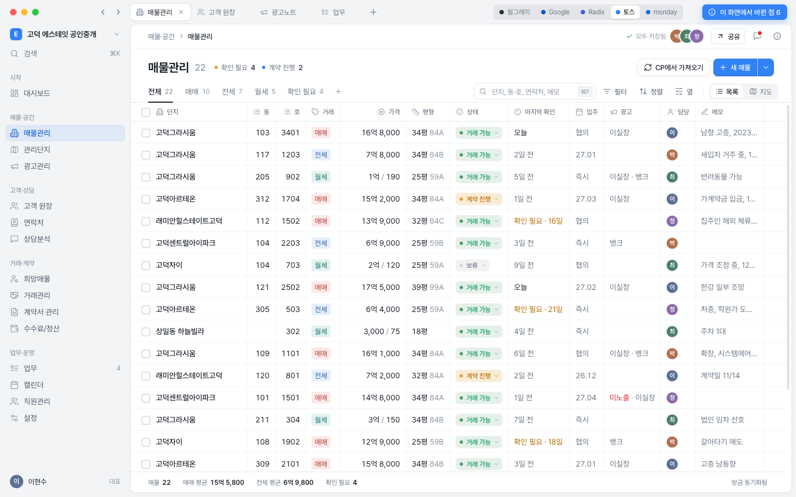
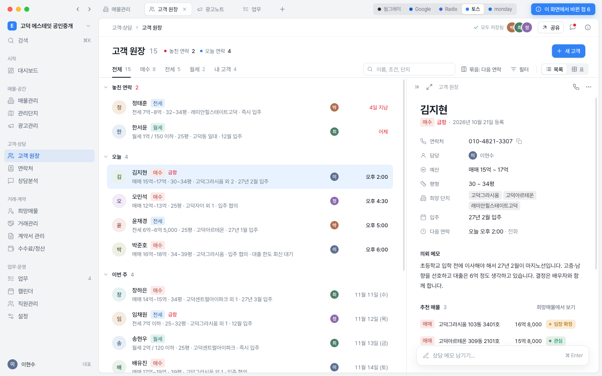
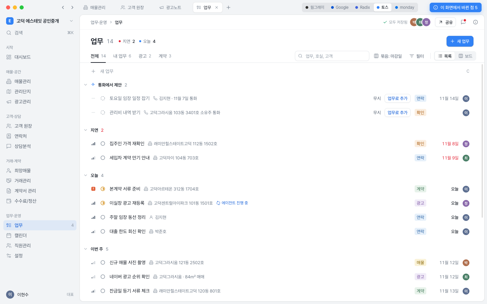
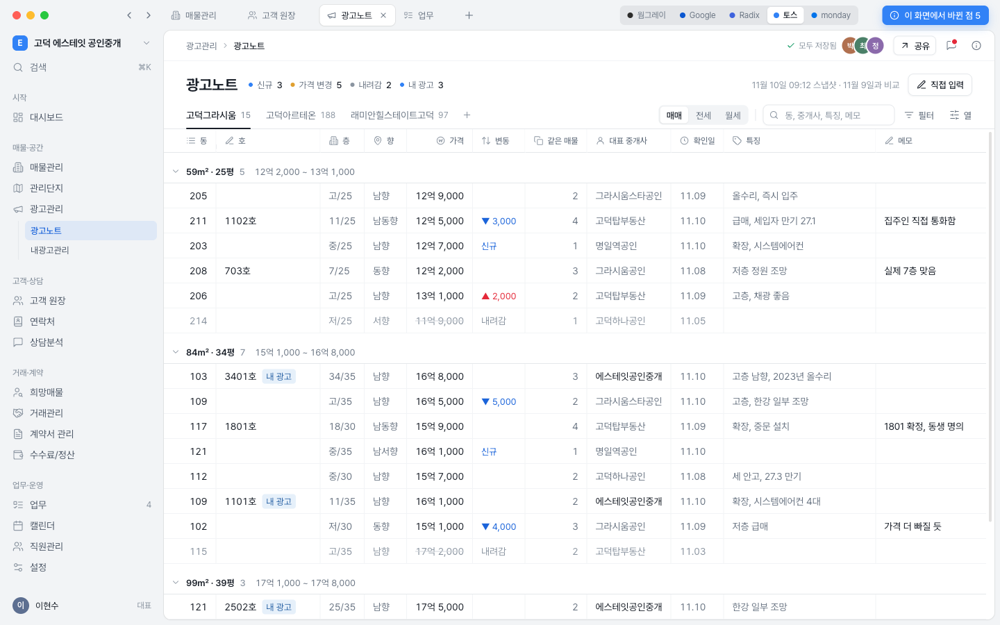

앱이 딱딱하고 답답해 보이는 이유는 색보다 겹겹의 띠, 배경 깔린 표 머리, 셀 안의 상자, 작고 굵은 글자였습니다. 색 토큰은 이미 Notion 값에 가깝게 바뀌어 있어서, 이 데모는 색을 그대로 두고 구조와 글자만 바꿨습니다. 네 화면은 모두 같은 규칙에서 나왔고, 화면 성격에 따라 표·목록·문서 중 하나를 고릅니다.
구조와 글자는 그대로 두고 색 역할만 바꿨습니다. 카드를 누르면 모든 데모 화면에 적용되고, 각 화면 위쪽 버튼으로도 바꿀 수 있습니다.
웜그레이 안은 주 버튼이 검정이고 선택·강조·바탕이 모두 같은 회색 계열입니다. Notion에서는 문서가 주인공이라 맞지만, 업무 앱에서는 뼈대 그림처럼 보입니다.
버튼·입력칸·표를 한곳에 모은 부품 견본도 있습니다. 눌러서 열어 보세요. 각 화면 오른쪽 위 파란 버튼에 그 화면에서 바뀐 점이 정리돼 있습니다.

표는 유지하고 띠·머리 배경·셀 상자를 걷어냈습니다. 필터는 버튼 하나로 모으고 적용한 것만 칩으로 보입니다.

다음 연락 날짜로 묶은 두 줄 목록입니다. 행을 누르면 오른쪽에 문서처럼 읽히는 상세가 열립니다.

마감일로 묶은 한 줄 목록입니다. 상태는 원, 우선순위는 막대, 통화에서 제안된 업무는 맨 위에 따로 모읍니다.

평형별로 묶고 묶음 제목에 시세 폭을 붙였습니다. 가격 변동은 글자색과 화살표만으로 보여 줍니다.
앱의 모든 메뉴를 재디자인한 데모입니다. 원본의 열·필터·조작을 유지하고 모양과 반응만 바꿨습니다. 어느 화면에서든 사이드바로 서로 오갈 수 있습니다.
왼쪽은 지금 코드의 값을 그대로 옮긴 것이고, 오른쪽이 데모에서 쓴 값입니다.
제목 줄 하나, 보기 탭과 도구 줄 하나만 둡니다. 필터 드롭다운 열 개는 거름 버튼 하나로 모으고, 적용한 필터만 칩으로 나타납니다.
줄어든 높이보다 상자가 사라진 것이 더 큽니다. 띠 사이 여백은 남지만 테두리와 배경이 없어서 한 장의 종이로 읽힙니다.
머리는 회색 13px 보통 굵기 글자와 아래선 하나로 충분합니다. 칸 세로선도 없앱니다. Notion도 세로선이 있어서 세로선 자체가 주원인은 아니지만, 머리 배경·진한 선과 겹치면 격자가 무거워집니다.
바꿀 곳: data-table.tsx notion 변형의 머리 bg-[#f7f7f5], border-[#d8d6d0], 셀 border-r.
| 단지 | 동 | 호 | 가격/보증금 |
|---|---|---|---|
| 고덕그라시움 | 103 | 3401 | 16억 8,000만 |
| 고덕아르테온 | 312 | 1704 | 15억 2,000만 |
| 매물 | 가격 |
|---|---|
| 고덕그라시움103동 3401호 | 16억 8,000 |
| 고덕아르테온312동 1704호 | 15억 2,000 |
지금은 12px 이하 클래스가 14px 이상보다 약 2.6배 많고, 임의 px 크기가 20종입니다. 데모는 아래 일곱 단계만 씁니다. 굵은 글자는 행의 이름 한 곳(500)과 제목에만 둡니다.
상태는 점과 글자, 경고는 글자색, 분류만 테두리 없는 옅은 태그로 둡니다. 드롭다운·버튼은 마우스를 올리거나 선택했을 때만 나타납니다.
바꿀 곳: data-table/cells.tsx의 배지와 행마다 그려지는 선택 상자.
지금은 모든 목록 화면이 같은 표라서 사람·일 화면까지 엑셀처럼 보입니다. 숫자를 나란히 비교하는 화면만 표를 쓰고, 사람과 일은 목록, 하나를 깊게 보는 곳은 문서로 둡니다.
지금은 둥근 알약 툴바와 직각 격자가 섞여 있습니다. 모서리는 세 값만 쓰고 알약 모양은 쓰지 않습니다.
작업 면은 회색 창 위에 놓인 흰 종이처럼 둡니다. 사이드바와 본문이 선 없이 나뉘고, 요즘 데스크톱 앱(Linear, Granola, Arc)에서 흔한 구성입니다.
공용 부품부터 고치면 표를 쓰는 화면 전체가 한 번에 바뀝니다.
components/data-table/data-table.tsx: notion 변형의 머리 배경과 진한 아래선, 셀 세로선, 열 안내 띠를 걷고 셀 글자를 14px 보통 굵기로 바꿉니다. 표를 쓰는 모든 화면에 반영됩니다.
components/data-table/cells.tsx: 테두리 배지를 평평한 태그와 점 상태로 바꾸고, 행마다 그리는 선택 상자를 마우스를 올렸을 때만 보이게 합니다.
제목 줄과 보기·도구 줄을 공용 컴포넌트로 만들고 매물관리부터 툴바 두 줄을 대체합니다. 필터 드롭다운은 거름 버튼 하나와 적용 칩으로 바꿉니다.
두 줄 행과 묶음 제목을 가진 목록 컴포넌트를 만들어 업무, 고객 원장 순으로 옮깁니다. 표 보기는 전환 버튼으로 남깁니다.
routes/_authenticated.tsx: 작업 면을 띄우고 사이드바를 정리합니다. 탭이 네이티브 뷰라서 뷰 영역 계산을 같이 고쳐야 하므로 마지막에 합니다.
데모에서는 아래처럼 골라 두었습니다.